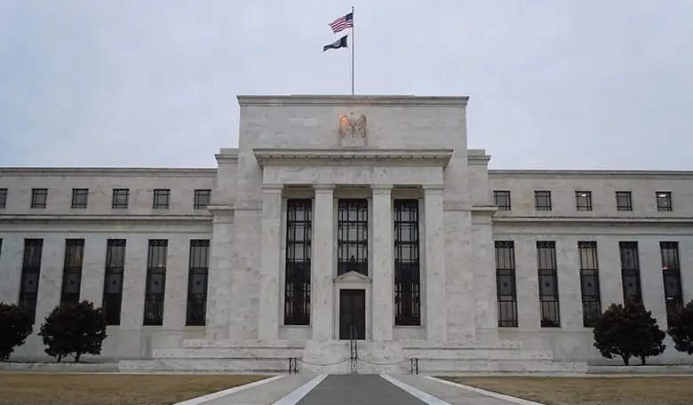
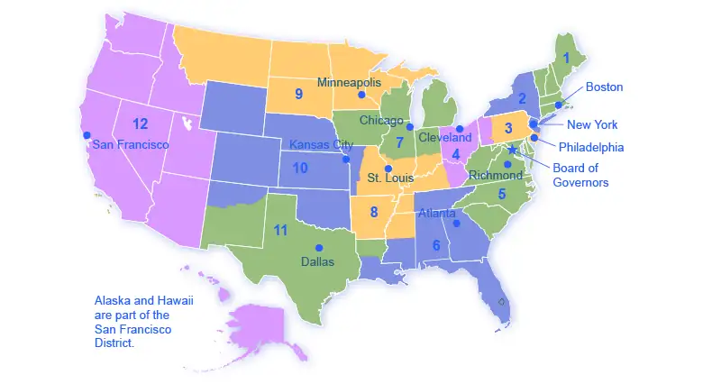
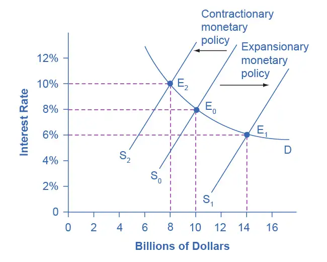
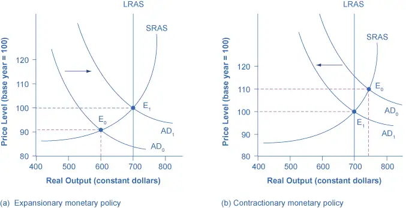
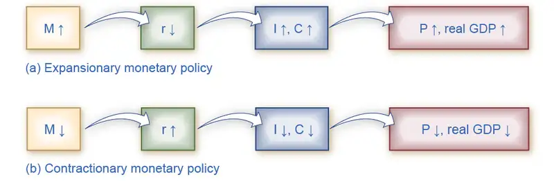
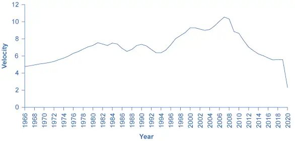
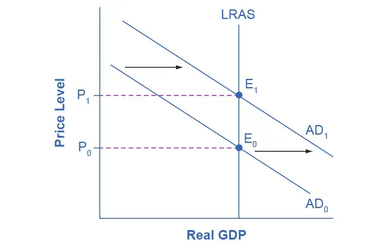

Chapter 28: Monetary Policy and Bank Regulation¶
Introduction¶

Bring It Home: The Problem of the Zero Percent Interest Rate Lower Bound
Most economists believe that monetary policy (the manipulation of interest rates and credit conditions by a nation’s central bank) has a powerful influence on a nation’s economy. Monetary policy works when the central bank reduces interest rates and makes credit more available. As a result, business investment and other types of spending increase, causing GDP and employment to grow.
However, what if the interest rates banks pay are close to zero already? They cannot be made negative, can they? That would mean that lenders pay borrowers for the privilege of taking their money. Yet, this was the situation the U.S. Federal Reserve found itself in both at the end of the 2008–2009 recession and during the COVID-19 recession of 2020. The federal funds rate, which is the interest rate for banks that the Federal Reserve targets with its monetary policy, was slightly above 5% in 2007. By 2009, it had fallen to 0.16%. It then fell again from over 2% to 0.05% in March 2020.
During the Great Recession, the Federal Reserve’s situation was further complicated because fiscal policy, the other major tool for managing the economy, was constrained by fears that the federal budget deficit and the public debt were already too high. What were the Federal Reserve’s options? How could the Federal Reserve use monetary policy to stimulate the economy? And while fiscal policy was more aggressive in 2020, the economic situation has in some cases been more severe and additional financial support was necessary. The solution to the problem of the lower bound in both recessions, as we will see in this chapter, was to change the rules of the game.
Chapter Outline: Introduction to Monetary Policy and Bank Regulation
In this chapter, you will learn about:
- The Federal Reserve Banking System and Central Banks
- Bank Regulation
- How a Central Bank Executes Monetary Policy
- Monetary Policy and Economic Outcomes
- Pitfalls for Monetary Policy
Money, loans, and banks are all interconnected. Money is deposited in bank accounts, which is then loaned to businesses, individuals, and other banks. When the interlocking system of money, loans, and banks works well, economic transactions smoothly occur in goods and labor markets and savers are connected with borrowers. If the money and banking system does not operate smoothly, the economy can either fall into recession or suffer prolonged inflation.
The government of every country has public policies that support the system of money, loans, and banking. However, these policies do not always work perfectly. This chapter discusses how monetary policy works and what may prevent it from working perfectly.
28.1 The Federal Reserve Banking System and Central Banks¶
Learning Objectives
By the end of this section, you will be able to:
- Explain the structure and organization of the U.S. Federal Reserve
- Discuss how central banks impact monetary policy, promote financial stability, and provide banking services
In making decisions about the money supply, a central bank decides whether to raise or lower interest rates and, in this way, to influence macroeconomic policy, whose goal is low unemployment and low inflation. The central bank is also responsible for regulating all or part of the nation’s banking system to protect bank depositors and insure the health of the bank’s balance sheet.
We call the organization responsible for conducting monetary policy and ensuring that a nation’s financial system operates smoothly the central bank. Most nations have central banks or currency boards. Some prominent central banks around the world include the European Central Bank, the Bank of Japan, and the Bank of England. In the United States, we call the central bank the Federal Reserve—often abbreviated as just “the Fed.” This section explains the U.S. Federal Reserve's organization and identifies the major central bank's responsibilities.
Structure/Organization of the Federal Reserve¶
Unlike most central banks, the Federal Reserve is semi-decentralized, mixing government appointees with representation from private-sector banks. At the national level, it is run by a Board of Governors, consisting of seven members appointed by the President of the United States and confirmed by the Senate. Appointments are for 14-year terms and they are arranged so that one term expires January 31 of every even-numbered year. The purpose of the long and staggered terms is to insulate the Board of Governors as much as possible from political pressure so that governors can make policy decisions based only on their economic merits. Additionally, except when filling an unfinished term, each member only serves one term, further insulating decision-making from politics. The Fed's policy decisions do not require congressional approval, and the President cannot ask for a Federal Reserve Governor to resign as the President can with cabinet positions.
One member of the Board of Governors is designated as the Chair. For example, from 1987 until early 2006, the Chair was Alan Greenspan. From 2006 until 2014, Ben Bernanke held the post. From 2014 to 2018, Janet Yellen was the Chair. The current Chair is Jerome Powell. See the following Clear It Up feature to find out more about the former and current Chair.
Clear It Up: Who has the most immediate economic power in the world?
What individual can make a financial market crash or soar just by making a public statement? It is not Bill Gates or Warren Buffett. It is not even the President of the United States. The answer is the Chair of the Federal Reserve Board of Governors. In 2018, President Donald Trump appointed Jerome H. Powell to a 4-year term as chair of the Federal Reserve, replacing Janet Yellen, who served as the first female chair of the Federal Reserve from 2014–2018 and who now serves as the Treasury Secretary in the Biden administration. In November 2021, Powell was nominated for a second term by President Biden; this appointment was confirmed in early-2022.
Powell played a pivotal role during the COVID-19 recession and its aftermath; in March 2020, under his leadership the Fed acted quickly to reduce the effective federal funds rate and expand its lending and bond-buying actions, similar to what Ben Bernanke did during the Great Recession. A centrist at heart, Powell has been criticized for fueling asset prices, even though in his many speeches and testimony before Congress he has consistently emphasized low unemployment rates and has been more tolerant of inflation than others on the Federal Reserve Board. Powell is not an academic economist by training or career—he has a J.D. from Georgetown Law and worked for many years at investment banks and on corporate boards—but this lack of "ivory tower" influences has helped guide a practical approach to economic problems, for which he is best known.
The Fed Chair is first among equals on the Board of Governors. While they have only one vote, the Chair controls the agenda, and is the Fed's public voice, so they have more power and influence than one might expect.
Link It Up
Visit this website to see who the current members of the Federal Reserve Board of Governors are. You can follow the links provided for each board member to learn more about their backgrounds, experiences, and when their terms on the board will end.
The Federal Reserve is more than the Board of Governors. The Fed also includes 12 regional Federal Reserve banks, each of which is responsible for supporting the commercial banks and economy generally in its district. Figure 28.3 shows the Federal Reserve districts and the cities where their regional headquarters are located. The commercial banks in each district elect a Board of Directors for each regional Federal Reserve bank, and that board chooses a president for each regional Federal Reserve district. Thus, the Federal Reserve System includes both federally and private-sector appointed leaders.

What Does a Central Bank Do?¶
The Federal Reserve, like most central banks, is designed to perform three important functions:
- To conduct monetary policy
- To promote stability of the financial system
- To provide banking services to commercial banks and other depository institutions, and to provide banking services to the federal government.
The first two functions are sufficiently important that we will discuss them in their own modules. The third function we will discuss here.
The Federal Reserve provides many of the same services to banks as banks provide to their customers. For example, all commercial banks have an account at the Fed where they deposit reserves. Similarly, banks can obtain loans from the Fed through the “discount window” facility, which we will discuss in more detail later. The Fed is also responsible for check processing. When you write a check, for example, to buy groceries, the grocery store deposits the check in its bank account. Then, the grocery store's bank returns the physical check (or an image of that actual check) to your bank, after which it transfers funds from your bank account to the grocery store's account. The Fed is responsible for each of these actions.
On a more mundane level, the Federal Reserve ensures that enough currency and coins are circulating through the financial system to meet public demands. For example, each year the Fed increases the amount of currency available in banks around the Christmas shopping season and reduces it again in January.
Finally, the Fed is responsible for assuring that banks are in compliance with a wide variety of consumer protection laws. For example, banks are forbidden from discriminating on the basis of age, race, sex, or marital status. Banks are also required to disclose publicly information about the loans they make for buying houses and how they distribute the loans geographically, as well as by sex and race of the loan applicants.
28.2 Bank Regulation¶
Learning Objectives
By the end of this section, you will be able to:
- Discuss the relationship between bank regulation and monetary policy
- Explain bank supervision
- Explain how deposit insurance and lender of last resort are two strategies to protect against bank runs
A safe and stable national financial system is a critical concern of the Federal Reserve. The goal is not only to protect individuals’ savings, but to protect the integrity of the financial system itself. This esoteric task is usually behind the scenes, but came into view during the 2008–2009 financial crisis, when for a brief period of time, critical parts of the financial system failed and firms became unable to obtain financing for ordinary parts of their business. Imagine if suddenly you were unable to access the money in your bank accounts because your checks were not accepted for payment and your debit cards were declined. This gives an idea of a failure of the payments/financial system.
Bank regulation is intended to maintain banks' solvency by avoiding excessive risk. Regulation falls into a number of categories, including reserve requirements, capital requirements, and restrictions on the types of investments banks may make. In Money and Banking, we learned that banks are required to hold a minimum percentage of their deposits on hand as reserves. “On hand” is a bit of a misnomer because, while a portion of bank reserves are held as cash in the bank, the majority are held in the bank’s account at the Federal Reserve, and their purpose is to cover desired withdrawals by depositors. Another part of bank regulation is restrictions on the types of investments banks are allowed to make. Banks are permitted to make loans to businesses, individuals, and other banks. They can purchase U.S. Treasury securities but, to protect depositors, they are not permitted to invest in the stock market or other assets that are perceived as too risky.
Bank capital is the difference between a bank’s assets and its liabilities. In other words, it is a bank’s net worth. A bank must have positive net worth; otherwise it is insolvent or bankrupt, meaning it would not have enough assets to pay back its liabilities. Regulation requires that banks maintain a minimum net worth, usually expressed as a percent of their assets, to protect their depositors and other creditors.
Link It Up
Visit this website to read the brief article, “Stop Confusing Monetary Policy and Bank Regulation.”
Bank Supervision¶
Several government agencies monitor banks' balance sheets to make sure they have positive net worth and are not taking too high a level of risk. Within the U.S. Department of the Treasury, the Office of the Comptroller of the Currency has a national staff of bank examiners who conduct on-site reviews of the 1,500 or so of the largest national banks. The bank examiners also review any foreign banks that have branches in the United States. The Office of the Comptroller of the Currency also monitors and regulates about 800 savings and loan institutions.
The National Credit Union Administration (NCUA) supervises credit unions, which are nonprofit banks that their members run and own. There are about 5,000 credit unions in the U.S. economy today, although the typical credit union is small compared to most banks.
The Federal Reserve also has some responsibility for supervising financial institutions. For example, we call conglomerate firms that own banks and other businesses “bank holding companies.” While other regulators like the Office of the Comptroller of the Currency supervises the banks, the Federal Reserve supervises the holding companies.
When bank supervision (and bank-like institutions such as savings and loans and credit unions) works well, most banks will remain financially healthy most of the time. If the bank supervisors find that a bank has low or negative net worth, or is making too high a proportion of risky loans, they can require that the bank change its behavior—or, in extreme cases, even force the bank to close or be sold to a financially healthy bank.
Bank supervision can run into both practical and political questions. The practical question is that measuring the value of a bank’s assets is not always straightforward. As we discussed in Money and Banking, a bank’s assets are its loans, and the value of these assets depends on estimates about the risk that customers will not repay these loans. These issues can become even more complex when a bank makes loans to banks or firms in other countries, or arranges financial deals that are much more complex than a basic loan.
The political question arises because a bank supervisor's decision to require a bank to close or to change its financial investments is often controversial, and the bank supervisor often comes under political pressure from the bank's owners and the local politicians to keep quiet and back off.
For example, many observers have pointed out that Japan’s banks were in deep financial trouble through most of the 1990s; however, nothing substantial had been done about it by the early 2000s. A similar unwillingness to confront problems with struggling banks is visible across the rest of the world, in East Asia, Latin America, Eastern Europe, Russia, and elsewhere.
In the United States, the government passed laws in the 1990s requiring that bank supervisors make their findings open and public, and that they act as soon as they identify a problem. However, as many U.S. banks were staggered by the 2008-2009 recession, critics of the bank regulators asked pointed questions about why the regulators had not foreseen the banks' financial shakiness earlier, before such large losses had a chance to accumulate.
Bank Runs¶
Back in the nineteenth century and during the first few decades of the twentieth century (around and during the Great Depression), putting your money in a bank could be nerve-wracking. Imagine that the net worth of your bank became negative, so that the bank’s assets were not enough to cover its liabilities. In this situation, whoever withdrew their deposits first received all of their money, and those who did not rush to the bank quickly enough, lost their money. We call depositors racing to the bank to withdraw their deposits, as Figure 28.4 shows a bank run. In the movie It’s a Wonderful Life, the bank manager, played by Jimmy Stewart, faces a mob of worried bank depositors who want to withdraw their money, but manages to allay their fears by allowing some of them to withdraw a portion of their deposits—using the money from his own pocket that was supposed to pay for his honeymoon.
The risk of bank runs created instability in the banking system. Even a rumor that a bank might experience negative net worth could trigger a bank run and, in a bank run, even healthy banks could be destroyed. Because a bank loans out most of the money it receives, and because it keeps only limited reserves on hand, a bank run of any size would quickly drain any of the bank’s available cash. When the bank had no cash remaining, it only intensified the fears of remaining depositors that they could lose their money. Moreover, a bank run at one bank often triggered a chain reaction of runs on other banks. In the late nineteenth and early twentieth century, bank runs were typically not the original cause of a recession—but they could make a recession much worse.
Deposit Insurance¶
To protect against bank runs, Congress has put two strategies into place: deposit insurance and the lender of last resort. Deposit insurance is an insurance system that makes sure depositors in a bank do not lose their money, even if the bank goes bankrupt. About 70 countries around the world, including all of the major economies, have deposit insurance programs. In the United States, the Federal Deposit Insurance Corporation (FDIC) is responsible for deposit insurance. Banks pay an insurance premium to the FDIC. The insurance premium is based on the bank’s level of deposits, and then adjusted according to the riskiness of a bank’s financial situation. In 2009, for example, a fairly safe bank with a high net worth might have paid 10–20 cents in insurance premiums for every $100 in bank deposits, while a risky bank with very low net worth might have paid 50–60 cents for every $100 in bank deposits.
Bank examiners from the FDIC evaluate the banks' balance sheets, looking at the asset and liability values to determine the risk level. The FDIC provides deposit insurance for about 4,914 banks (as of the third quarter of 2021). Even if a bank fails, the government guarantees that depositors will receive up to $250,000 of their money in each account, which is enough for almost all individuals, although not sufficient for many businesses. Since the United States enacted deposit insurance in the 1930s, no one has lost any of their insured deposits. Bank runs no longer happen at insured banks.
Lender of Last Resort¶
The problem with bank runs is not that insolvent banks will fail; they are, after all, bankrupt and need to be shut down. The problem is that bank runs can cause solvent banks to fail and spread to the rest of the financial system. To prevent this, the Fed stands ready to lend to banks and other financial institutions when they cannot obtain funds from anywhere else. This is known as the lender of last resort role. For banks, the central bank acting as a lender of last resort helps to reinforce the effect of deposit insurance and to reassure bank customers that they will not lose their money.
The lender of last resort task can arise in other financial crises, as well. During the 1987 stock market crash panic, when U.S. stock values fell by 25% in a single day, the Federal Reserve made a number of short-term emergency loans so that the financial system could keep functioning. During the 2008-2009 recession, we can interpret the Fed's “quantitative easing” policies (discussed below) as a willingness to make short-term credit available as needed in a time when the banking and financial system was under stress.
28.3 How a Central Bank Executes Monetary Policy¶
Learning Objectives
By the end of this section, you will be able to:
- Explain the reason for open market operations
- Evaluate reserve requirements and discount rates
- Interpret and show bank activity through balance sheets
- Distinguish between monetary policy in an environment of limited reserves and monetary policy in an environment of ample reserves
The Federal Reserve's most important function is to conduct the nation’s monetary policy. Article I, Section 8 of the U.S. Constitution gives Congress the power “to coin money” and “to regulate the value thereof.” As part of the 1913 legislation that created the Federal Reserve, Congress delegated these powers to the Fed. Monetary policy involves managing interest rates and credit conditions, which influences the level of economic activity, as we describe in more detail below.
We discussed in Money and Banking the difference between when banks keep limited reserves and when banks keep ample reserves. In an environment of limited reserves, a central bank has three traditional tools to implement monetary policy in the economy:
- Open market operations
- Changing reserve requirements
- Changing the discount rate
In discussing how these three tools work, it is useful to think of the central bank as a “bank for banks”—that is, each private-sector bank has its own account at the central bank. As noted, these monetary policy tools are used in an environment of limited reserves. However, since the financial crisis of 2008–2009, also known as the Great Recession, banks have kept what we defined earlier as ample reserves. As such, the FOMC no longer utilizes the limited reserves tools. But, there is nothing that says banks will not return to keeping limited reserves, so understanding how these tools work is still important. We will discuss each of these monetary policy tools in the sections below.
Open Market Operations¶
Since the early 1920s, the most common monetary policy tool in the U.S. has been open market operations. These take place when the central bank sells or buys U.S. Treasury bonds in order to influence the quantity of bank reserves and the level of interest rates. The specific interest rate targeted in open market operations is the federal funds rate. The name is a bit of a misnomer since the federal funds rate is the interest rate that commercial banks charge making overnight loans to other banks. As such, it is a very short term interest rate, but one that reflects credit conditions in financial markets very well.
The Federal Open Market Committee (FOMC) makes the decisions regarding these open market operations. The FOMC comprises seven members of the Federal Reserve’s Board of Governors. It also includes five voting members who the Board draws, on a rotating basis, from the regional Federal Reserve Banks. The New York district president is a permanent FOMC voting member and the Board fills other four spots on a rotating, annual basis, from the other 11 districts. The FOMC typically meets every six weeks, but it can meet more frequently if necessary. The FOMC tries to act by consensus; however, the Federal Reserve's chairman has traditionally played a very powerful role in defining and shaping that consensus. For the Federal Reserve, and for most central banks, open market operations have, over the last few decades, been the most commonly used tool of monetary policy.
Link It Up
Visit this website for the Federal Reserve to learn more about current monetary policy.
To understand how open market operations affect the money supply in a limited reserves environment, assume that Happy Bank starts with $460 million in assets, divided among reserves, bonds and loans, and $400 million in liabilities in the form of deposits, with a net worth of $60 million. When the central bank purchases $20 million in bonds from Happy Bank, the bond holdings of Happy Bank fall by $20 million and the bank’s reserves rise by $20 million. However, Happy Bank only wants to hold $40 million in reserves, so the bank decides to loan out the extra $20 million in reserves and its loans rise by $20 million. The central bank's open market operation causes Happy Bank to make loans instead of holding its assets in the form of government bonds, which expands the money supply. As the new loans are deposited in banks throughout the economy, these banks will, in turn, loan out some of the deposits they receive, triggering the money multiplier that we discussed in Money and Banking. To see the impact on Happy Bank's balance sheet, refer to the appendix How Open Market Operations Affect Balance Sheets in a Limited Reserves Environment.
Where did the Federal Reserve get the $20 million that it used to purchase the bonds? A central bank has the power to create money. In practical terms, the Federal Reserve would write a check to Happy Bank, so that Happy Bank can have that money credited to its bank account at the Federal Reserve. In truth, the Federal Reserve created the money to purchase the bonds out of thin air—or with a few clicks on some computer keys.
Open market operations can also reduce the quantity of money and loans in an economy. When Happy Bank purchases $30 million in bonds, Happy Bank sends $30 million of its reserves to the central bank, but now holds an additional $30 million in bonds. However, Happy Bank wants to hold $40 million in reserves, as in our previous example, so it will adjust down the quantity of its loans by $30 million, to bring its reserves back to the desired level. In practical terms, a bank can easily reduce its quantity of loans. At any given time, a bank is receiving payments on loans that it made previously and also making new loans. If the bank just slows down or briefly halts making new loans, and instead adds those funds to its reserves, then its overall quantity of loans will decrease. A decrease in the quantity of loans also means fewer deposits in other banks, and other banks reducing their lending as well, as the money multiplier that we discussed in Money and Banking takes effect. To see the impact on Happy Bank's balance sheet, refer to the appendix How Open Market Operations Affect Balance Sheets in a Limited Reserves Environment. What about all those bonds? How do they affect the money supply? Read the following Clear It Up feature for the answer.
Clear It Up: Does selling or buying bonds increase the money supply?
Is it a sale of bonds by the central bank which increases bank reserves and lowers interest rates or is it a purchase of bonds by the central bank? The easy way to keep track of this is to treat the central bank as being outside the banking system. When a central bank buys bonds, money is flowing from the central bank to individual banks in the economy, increasing the money supply in circulation. When a central bank sells bonds, then money from individual banks in the economy is flowing into the central bank—reducing the quantity of money in the economy.
The Federal Reserve was founded in the aftermath of the 1907 Financial Panic when many banks failed as a result of bank runs. As mentioned earlier, since banks make profits by lending out their deposits, no bank, even those that are not bankrupt, can withstand a bank run. As a result of the Panic, the Federal Reserve was founded to be the “lender of last resort.” In the event of a bank run, sound banks, (banks that were not bankrupt) could borrow as much cash as they needed from the Fed’s discount “window” to quell the bank run. We call the interest rate banks pay for such loans the discount rate. (They are so named because the bank makes loans against its outstanding loans “at a discount” of their face value.) Once depositors became convinced that the bank would be able to honor their withdrawals, they no longer had a reason to make a run on the bank. In short, the Federal Reserve was originally intended to provide credit passively, but in the years since its founding, the Fed has taken on a more active role with monetary policy.
Changing the Discount Rate¶
In the Federal Reserve Act, the phrase “...to afford means of rediscounting commercial paper” is contained in its long title. This was the main tool for monetary policy when the Fed was initially created. Today, the Federal Reserve has even more tools at its disposal, including quantitative easing, overnight repurchase agreements, and interest on excess reserves. This illustrates how monetary policy has evolved and how it continues to do so.
The second traditional method for conducting monetary policy in a limited reserve environment is to raise or lower the discount rate. If the central bank raises the discount rate, then commercial banks will reduce their borrowing of reserves from the Fed, and instead call in loans to replace those reserves. Since fewer loans are available, the money supply falls and market interest rates rise. If the central bank lowers the discount rate it charges to banks, the process works in reverse.
In recent decades, the Federal Reserve has made relatively few discount loans. Before a bank borrows from the Federal Reserve to fill out its required reserves, the bank is expected to first borrow from other available sources, like other banks. This is encouraged by the Fed charging a higher discount rate than the federal funds rate. Given that most banks borrow little at the discount rate, changing the discount rate up or down has little impact on their behavior. More importantly, the Fed has found from experience that open market operations are a more precise and powerful means of executing any desired monetary policy.
Changing Reserve Requirements¶
A potential third method of conducting monetary policy in a limited reserves environment is for the central bank to raise or lower the reserve requirement, which, as we noted earlier, is the percentage of each bank’s deposits that it is legally required to hold either as cash in their vault or on deposit with the central bank. If banks are required to hold a greater amount in reserves, they have less money available to lend out. If banks are allowed to hold a smaller amount in reserves, they will have a greater amount of money available to lend out.
Until very recently, the Federal Reserve required banks to hold reserves equal to 0% of the first $14.5 million in deposits, then to hold reserves equal to 3% of the deposits up to $103.6 million, and 10% of any amount above $103.6 million. The Fed makes small changes in the reserve requirements almost every year. For example, the $103.6 million dividing line is sometimes bumped up or down by a few million dollars. Today, these rates are no longer in effect; as of March 2020 (when the pandemic-induced recession hit), the 10% and 3% requirements were reduced to 0%, effectively eliminating the reserve requirement for all depository institutions.
The Fed rarely uses large changes in reserve requirements to execute monetary policy; the pandemic was an exception for obvious reasons. Also, a sudden demand that all banks increase their reserves would be extremely disruptive and difficult for them to comply. While loosening requirements too much might create a danger of banks’ inability to meet withdrawal demands, the benefits of reducing the reserve requirements in March 2020 exceeded the risks.
In the following section, we will discuss how interest on excess reserves is used as a monetary policy tool.
Monetary Policy and Ample Reserves¶
As we noted previously, banks in the United States have historically had very little reason to keep more than their minimum required reserves because their regional Federal Reserve bank did not pay any interest on those reserves. This behavior changed dramatically during the 2008–2009 financial crisis.
During this period of time, 389 banks failed. The banks that survived responded to the financial crisis by increasing their reserves well beyond their required minimum. Combined with the measures undertaken by the FOMC and the U.S. government to respond to the financial crisis, banks’ reserves increased from around $15 billion in 2007, to $2.7 trillion by late 2014. While reserves did decrease to around $1.7 trillion by 2017, this was no longer an environment of limited reserves, but an environment of ample reserves. In fact, in 2019, the FOMC issued a statement indicating that monetary policy would be based on ample reserves. While it may be a good decision for banks to keep ample reserves, as we know, the banking system facilitates both short-term and long-term economic activity when it makes loans to finance consumption, for business investment and expansion, and to help fund and support innovation, among many other possibilities. In a sense, loans allow for the economy to ultimately become more productive, causing an increase in long-run economic growth. The point is that we need the banking system to be willing to make loans and not just keep ample excess reserves. However, when banks are keeping a trillion or more dollars as excess reserves, these are funds that they are choosing not to lend out, potentially causing the economy to grow at a slower rate than it otherwise might.
How then can the FOMC incentivize banks to lend out these excess reserves? This is where the interest rate on reserve balances (IORB) comes in. The IORB is the interest rate paid to banks for their holdings of excess reserves. Congress granted the Federal Reserve the ability to pay this interest in 2006. The policy was originally slated to begin in 2011, but the financial crisis accelerated its start date to 2008. (For a few years there were two separate rates, the interest rate on required reserves and the interest rate on excess reserves, but these two were combined into the IORB in 2021.) The FOMC controls the IORB directly. It sets the IORB at whatever rate it chooses, based on macroeconomic conditions and forecasts.
We can now explore how the IORB may affect banks’ decisions to hold more or fewer excess reserves. As we noted in our discussion of open market operations, the federal funds rate (FFR) is the specific interest rate targeted by the FOMC. The federal funds market is where banks borrow and lend their excess reserves from one another over a very short period of time, often described as overnight. It is a market, as we explained in Demand and Supply, with supply, demand, and a price. In the federal funds market, you can think of the FFR as the price a bank gets paid for lending (or selling) excess reserves in the federal funds market, and you can think of the FFR as the price a bank pays for borrowing (or buying) those excess reserves. The FFR is targeted by the FOMC because as the FFR increases and decreases, most other interest rates eventually increase or decrease too. In Monetary Policy and Economic Outcomes, we’ll show how changes in interest rates affect the macroeconomy.
To illustrate how changes in the IORB can affect the FFR, assume that the IORB is 2%, which means that a bank can earn 2% on its excess reserves, free of risk. Because in the federal funds market, the lending period is often very short-term, sometimes even shorter than one day, those loans are nearly risk-free. As a result, most banks view the IORB as a very close alternative to the FFR. If the FFR also pays 2% interest, generally, a bank will be indifferent to where it keeps its excess reserves.
Let’s say that macroeconomic conditions convince the FOMC to lower the FFR. To do this, it will lower the IORB. Let’s see why. If the IORB decreases to 1.75%, banks will generally choose to reduce their excess reserves holdings at their regional Federal Reserve bank and instead lend those excess reserves in the federal funds market in order to earn the currently higher FFR of 2%. But this increase in the supply of excess reserves in the federal funds market will act to lower the price in the federal funds market, which is the FFR.
When the FOMC lowers the IORB, it also tends to lower the discount rate at the same time. Some banks could then engage in arbitrage, which is the simultaneous (or near-simultaneous) purchase and sale of a good to profit from a difference in the price of that good across markets. In our example, if the discount rate also decreases from 2% to 1.75%, a bank could borrow excess reserves from the Federal Reserve at the 1.75% discount rate and then lend those same excess reserves in the federal funds market at 2%, earning $0.0025 on every $1.00 borrowed. (This may not seem like much, but multiply this by $1 million or $10 million and it adds up quickly.) But this arbitrage activity also ensures that the FFR will decrease as the FOMC desires because the increase in the supply of excess reserves will cause the FFR to decrease, and as banks leave the federal funds market to borrow from the Federal Reserve, the decrease in the demand for excess reserves will cause the FFR to decrease too.
Alternatively, let’s say that macroeconomic conditions convince the FOMC to raise the FFR. If the FOMC increases the IORB to 2.25%, banks will then choose to keep more excess reserves at their regional Federal Reserve bank and earn the higher IORB. This decrease in supply in the federal funds market will cause the FFR to increase as well.
Arbitrage will also ensure that the FFR increases. As the IORB increases, banks will borrow more excess reserves in the federal funds market and deposit them with their regional Federal Reserve bank in order to earn a profit on the difference between the IORB and the FFR. This increase in demand will then cause the FFR to increase as well.
Quantitative Easing¶
The most powerful and commonly used of the three traditional tools of monetary policy—open market operations—works by expanding or contracting the money supply in a way that influences the interest rate. In late 2008, as the U.S. economy struggled with recession, the Federal Reserve had already reduced the interest rate to near-zero. With the recession still ongoing, the Fed decided to adopt an innovative and nontraditional policy known as quantitative easing (QE). This is the purchase of long-term government and private mortgage-backed securities by central banks to make credit available so as to stimulate aggregate demand.
Quantitative easing differed from traditional monetary policy in several key ways. First, it involved the Fed purchasing long term Treasury bonds, rather than short term Treasury bills. In 2008, however, it was impossible to stimulate the economy any further by lowering short term rates because they were already as low as they could get. (Read the closing Bring it Home feature for more on this.) Therefore, Chairman Bernanke sought to lower long-term rates utilizing quantitative easing.
This leads to a second way QE is different from traditional monetary policy. Instead of purchasing Treasury securities, the Fed also began purchasing private mortgage-backed securities, something it had never done before. During the financial crisis, which precipitated the recession, mortgage-backed securities were termed “toxic assets,” because when the housing market collapsed, no one knew what these securities were worth, which put the financial institutions which were holding those securities on very shaky ground. By offering to purchase mortgage-backed securities, the Fed was both pushing long term interest rates down and also removing possibly “toxic assets” from the balance sheets of private financial firms, which would strengthen the financial system.
Quantitative easing (QE) occurred in three episodes:
- During QE1, which began in November 2008, the Fed purchased $600 billion in mortgage-backed securities from government enterprises Fannie Mae and Freddie Mac.
- In November 2010, the Fed began QE2, in which it purchased $600 billion in U.S. Treasury bonds.
- QE3, began in September 2012 when the Fed commenced purchasing $40 billion of additional mortgage-backed securities per month. This amount was increased in December 2012 to $85 billion per month. The Fed stated that, when economic conditions permit, it will begin tapering (or reducing the monthly purchases). By October 2014, the Fed had announced the final $15 billion bond purchase, ending Quantitative Easing.
We usually think of the quantitative easing policies that the Federal Reserve adopted (as did other central banks around the world) as temporary emergency measures. If these steps are to be temporary, then the Federal Reserve will need to stop making these additional loans and sell off the financial securities it has accumulated. The concern is that the process of quantitative easing may prove more difficult to reverse than it was to enact. The evidence suggests that QE1 was somewhat successful, but that QE2 and QE3 have been less so.
Fast forward to March 2020, when the Fed under the leadership of Jerome Powell promised another round of asset purchases which was dubbed by some as “QE4,” intended once again to provide liquidity to a distressed financial system in the wake of the pandemic. This round was much faster, increasing Fed assets by $2 trillion in just a few months. Recently, the Fed has begun to slow down the purchase of these assets once again through a taper, and the pace of the tapering is expected to increase through 2022. But as of the end of 2021, total Fed assets exceed $8 trillion, compared to $4 trillion in February 2020.
28.4 Monetary Policy and Economic Outcomes¶
Learning Objectives
By the end of this section, you will be able to:
- Contrast expansionary monetary policy and contractionary monetary policy
- Explain how monetary policy impacts interest rates and aggregate demand
- Evaluate Federal Reserve decisions over the last forty years
- Explain the significance of quantitative easing (QE)
A monetary policy that lowers interest rates and stimulates borrowing is an expansionary monetary policy or loose monetary policy. Conversely, a monetary policy that raises interest rates and reduces borrowing in the economy is a contractionary monetary policy or tight monetary policy. This module will discuss how expansionary and contractionary monetary policies affect interest rates and aggregate demand, and how such policies will affect macroeconomic goals like unemployment and inflation. We will conclude with a look at the Fed’s monetary policy practice in recent decades.
The Effect of Monetary Policy on Interest Rates¶
Consider the market for loanable bank funds in Figure 28.5. The original equilibrium (E0) occurs at an 8% interest rate and a quantity of funds loaned and borrowed of $10 billion. An expansionary monetary policy will shift the supply of loanable funds to the right from the original supply curve (S0) to S1, leading to an equilibrium (E1) with a lower 6% interest rate and a quantity $14 billion in loaned funds. Conversely, a contractionary monetary policy will shift the supply of loanable funds to the left from the original supply curve (S0) to S2, leading to an equilibrium (E2) with a higher 10% interest rate and a quantity of $8 billion in loaned funds.

How does a central bank “raise” interest rates? When describing the central bank's monetary policy actions, it is common to hear that the central bank “raised interest rates” or “lowered interest rates.” We need to be clear about this: more precisely, through open market operations the central bank changes bank reserves in a way which affects the supply curve of loanable funds. As a result, Figure 28.5 shows that interest rates change. If they do not meet the Fed’s target, the Fed can supply more or less reserves until interest rates do.
Recall that the specific interest rate the Fed targets is the federal funds rate. The Federal Reserve has, since 1995, established its target federal funds rate in advance of any open market operations.
Of course, financial markets display a wide range of interest rates, representing borrowers with different risk premiums and loans that they must repay over different periods of time. In general, when the federal funds rate drops substantially, other interest rates drop, too, and when the federal funds rate rises, other interest rates rise. However, a fall or rise of one percentage point in the federal funds rate—which remember is for borrowing overnight—will typically have an effect of less than one percentage point on a 30-year loan to purchase a house or a three-year loan to purchase a car. Monetary policy can push the entire spectrum of interest rates higher or lower, but the forces of supply and demand in those specific markets for lending and borrowing set the specific interest rates.
The Effect of Monetary Policy on Aggregate Demand¶
Monetary policy affects interest rates and the available quantity of loanable funds, which in turn affects several components of aggregate demand. Tight or contractionary monetary policy that leads to higher interest rates and a reduced quantity of loanable funds will reduce two components of aggregate demand. Business investment will decline because it is less attractive for firms to borrow money, and even firms that have money will notice that, with higher interest rates, it is relatively more attractive to put those funds in a financial investment than to make an investment in physical capital. In addition, higher interest rates will discourage consumer borrowing for big-ticket items like houses and cars. Conversely, loose or expansionary monetary policy that leads to lower interest rates and a higher quantity of loanable funds will tend to increase business investment and consumer borrowing for big-ticket items.
If the economy is suffering a recession and high unemployment, with output below potential GDP, expansionary monetary policy can help the economy return to potential GDP. Figure 28.6 (a) illustrates this situation. This example uses a short-run upward-sloping Keynesian aggregate supply curve (SRAS). The original equilibrium during a recession of E0 occurs at an output level of 600. An expansionary monetary policy will reduce interest rates and stimulate investment and consumption spending, causing the original aggregate demand curve (AD0) to shift right to AD1, so that the new equilibrium (E1) occurs at the potential GDP level of 700.

Conversely, if an economy is producing at a quantity of output above its potential GDP, a contractionary monetary policy can reduce the inflationary pressures for a rising price level. In Figure 28.6 (b), the original equilibrium (E0) occurs at an output of 750, which is above potential GDP. A contractionary monetary policy will raise interest rates, discourage borrowing for investment and consumption spending, and cause the original demand curve (AD0) to shift left to AD1, so that the new equilibrium (E1) occurs at the potential GDP level of 700.
These examples suggest that monetary policy should be countercyclical; that is, it should act to counterbalance the business cycles of economic downturns and upswings. The Fed should loosen monetary policy when a recession has caused unemployment to increase and tighten it when inflation threatens. Of course, countercyclical policy does pose a danger of overreaction. If loose monetary policy seeking to end a recession goes too far, it may push aggregate demand so far to the right that it triggers inflation. If tight monetary policy seeking to reduce inflation goes too far, it may push aggregate demand so far to the left that a recession begins. Figure 28.7 (a) summarizes the chain of effects that connect loose and tight monetary policy to changes in output and the price level.

Federal Reserve Actions Over Last Four Decades¶
For the period from 1970 through 2020, we can summarize Federal Reserve monetary policy by looking at how it targeted the federal funds interest rate using open market operations.
Of course, telling the story of the U.S. economy since 1970 in terms of Federal Reserve actions leaves out many other macroeconomic factors that were influencing unemployment, recession, economic growth, and inflation over this time. The ten episodes of Federal Reserve action outlined in the sections below also demonstrate that we should consider the central bank as one of the leading actors influencing the macro economy. As we noted earlier, the single person with the greatest power to influence the U.S. economy is probably the Federal Reserve chairperson.
Figure 28.8 shows how the Federal Reserve has carried out monetary policy by targeting the federal funds interest rate in the last few decades. The graph shows the federal funds interest rate (remember, this interest rate is set through open market operations), the unemployment rate, and the inflation rate since 1970. Different episodes of monetary policy during this period are indicated in the figure.
![This graph illustrates three lines: the Federal funds interest rate, the inflation rate, and the unemployment rate. The y-axis shows these rates as a percent, from –2 to 18, in increments of 2 percent. The x-axis shows years, from 1976 to 2020. Ten episodes are identified; these represent monetary policy actions undertaken by the Federal Reserve. The federal funds rate line generally follows the inflation rate line. The unemployment rate line generally moves in the opposite direction of the federal funds rate line and the inflation rate line. Episode 1 occurs in the late 1970s. The rate of inflation is greater than 10 percent in 1979 and 1980, and the federal funds rate increases from 5.5 percent in 1977 to 16 percent in 1981. This also causes the unemployment rate to increase to 10 percent in 1982. Episode 9 occurs in 2008 and 2009 during the Great Recession. The inflation rate declines to slightly negative in 2009, and the unemployment rate increases to nearly 10 percent in 2009. The federal funds rate declines to 2 percent in 2008 and to nearly 0 percent in 2009.](img/cnx-econ3ev1-2-c28-10.webp)
Episode 1
Consider Episode 1 in the late 1970s. The rate of inflation was very high, exceeding 10% in 1979 and 1980, so the Federal Reserve used tight monetary policy to raise interest rates, with the federal funds rate rising from 5.5% in 1977 to 16.4% in 1981. By 1983, inflation was down to 3.2%, but aggregate demand contracted sharply enough that back-to-back recessions occurred in 1980 and in 1981–1982, and the unemployment rate rose from 5.8% in 1979 to 9.7% in 1982.
Episode 2
In Episode 2, when economists persuaded the Federal Reserve in the early 1980s that inflation was declining, the Fed began slashing interest rates to reduce unemployment. The federal funds interest rate fell from 16.4% in 1981 to 6.8% in 1986. By 1986 or so, inflation had fallen to about 2% and the unemployment rate had come down to 7%, and was still falling.
Episode 3
However, in Episode 3 in the late 1980s, inflation appeared to be creeping up again, rising from 2% in 1986 up toward 5% by 1989. In response, the Federal Reserve used contractionary monetary policy to raise the federal funds rates from 6.6% in 1987 to 9.2% in 1989. The tighter monetary policy stopped inflation, which fell from above 5% in 1990 to under 3% in 1992, but it also helped to cause the 1990-1991 recession, and the unemployment rate rose from 5.3% in 1989 to 7.5% by 1992.
Episode 4
In Episode 4, in the early 1990s, when the Federal Reserve was confident that inflation was back under control, it reduced interest rates, with the federal funds interest rate falling from 8.1% in 1990 to 3.5% in 1992. As the economy expanded, the unemployment rate declined from 7.5% in 1992 to less than 5% by 1997.
Episodes 5 and 6
In Episodes 5 and 6, the Federal Reserve perceived a risk of inflation and raised the federal funds rate from 3% to 5.8% from 1993 to 1995. Inflation did not rise, and the period of economic growth during the 1990s continued. Then in 1999 and 2000, the Fed was concerned that inflation seemed to be creeping up so it raised the federal funds interest rate from 4.6% in December 1998 to 6.5% in June 2000. By early 2001, inflation was declining again, but a recession occurred in 2001. Between 2000 and 2002, the unemployment rate rose from 4.0% to 5.8%.
Episodes 7 and 8
In Episodes 7 and 8, the Federal Reserve conducted a loose monetary policy and slashed the federal funds rate from 6.2% in 2000 to just 1.7% in 2002, and then again to 1% in 2003. They actually did this because of fear of Japan-style deflation. This persuaded them to lower the Fed funds further than they otherwise would have. The recession ended, but, unemployment rates were slow to decline in the early 2000s. Finally, in 2004, the unemployment rate declined and the Federal Reserve began to raise the federal funds rate until it reached 5% by 2007.
Episode 9
In Episode 9, as the Great Recession took hold in 2008, the Federal Reserve was quick to slash interest rates, taking them down to 2% in 2008 and to nearly 0% in 2009. When the Fed had taken interest rates down to near-zero, the economy was still deep in recession. Open market operations could not make the interest rate turn negative. The Federal Reserve had to think “outside the box.”
Episode 10
In Episode 10, which started in March 2020, the Fed cut interest rates again, reducing the target federal funds rate from 2% to between 0–1/4% in a matter of weeks. Limited by the zero lower bound, the Fed once again had to think “outside the box” in order to further support the financial system.
Link It Up
The monetary policy discussed here is what was used prior to 2009. Go to this article on the Fed’s new monetary policy tools and this article on teaching the linkage between banks and the Fed for more information on modern monetary policy.
28.5 Pitfalls for Monetary Policy¶
Learning Objectives
By the end of this section, you will be able to:
- Analyze whether monetary policy decisions should be made more democratically
- Calculate the velocity of money
- Evaluate the central bank’s influence on inflation, unemployment, asset bubbles, and leverage cycles
- Calculate the effects of monetary stimulus
In the real world, effective monetary policy faces a number of significant hurdles. Monetary policy affects the economy only after a time lag that is typically long and of variable length. Remember, monetary policy involves a chain of events: the central bank must perceive a situation in the economy, hold a meeting, and make a decision to react by tightening or loosening monetary policy. The change in monetary policy must percolate through the banking system, changing the quantity of loans and affecting interest rates. When interest rates change, businesses must change their investment levels and consumers must change their borrowing patterns when purchasing homes or cars. Then it takes time for these changes to filter through the rest of the economy.
As a result of this chain of events, monetary policy has little effect in the immediate future. Instead, its primary effects are felt perhaps one to three years in the future. The reality of long and variable time lags does not mean that a central bank should refuse to make decisions. It does mean that central banks should be humble about taking action, because of the risk that their actions can create as much or more economic instability as they resolve.
Excess Reserves¶
Banks are legally required to hold a minimum level of reserves, but no rule prohibits them from holding additional excess reserves above the legally mandated limit. For example, during a recession banks may be hesitant to lend, because they fear that when the economy is contracting, a high proportion of loan applicants become less likely to repay their loans.
When many banks are choosing to hold excess reserves, expansionary monetary policy may not work well. This may occur because the banks are concerned about a deteriorating economy, while the central bank is trying to expand the money supply. If the banks prefer to hold excess reserves above the legally required level, the central bank cannot force individual banks to make loans. Similarly, sensible businesses and consumers may be reluctant to borrow substantial amounts of money in a recession, because they recognize that firms’ sales and employees’ jobs are more insecure in a recession, and they do not want to face the need to make interest payments. The result is that during an especially deep recession, an expansionary monetary policy may have little effect on either the price level or the real GDP.
Japan experienced this situation in the 1990s and early 2000s. Japan’s economy entered a period of very slow growth, dipping in and out of recession, in the early 1990s. By February 1999, the Bank of Japan had lowered the equivalent of its federal funds rate to 0%. It kept it there most of the time through 2003. Moreover, in the two years from March 2001 to March 2003, the Bank of Japan also expanded the country's money supply by about 50%—an enormous increase. Even this highly expansionary monetary policy, however, had no substantial effect on stimulating aggregate demand. Japan’s economy continued to experience extremely slow growth into the mid-2000s.
Clear It Up: Should monetary policy decisions be made more democratically?
Should a nation’s Congress or legislature comprised of elected representatives conduct monetary policy or should a politically appointed central bank that is more independent of voters take charge? Here are some of the arguments.
The Case for Greater Democratic Control of Monetary Policy
Elected representatives pass taxes and spending bills to conduct fiscal policy by passing tax and spending bills. They could handle monetary policy in the same way. They will sometimes make mistakes, but in a democracy, it is better to have elected officials who are accountable to voters make mistakes instead of political appointees. After all, the people appointed to the top governing positions at the Federal Reserve—and to most central banks around the world—are typically bankers and economists. They are not representatives of borrowers like small businesses or farmers nor are they representatives of labor unions. Central banks might not be so quick to raise interest rates if they had to pay more attention to firms and people in the real economy.
The Case for an Independent Central Bank
Because the central bank has some insulation from day-to-day politics, its members can take a nonpartisan look at specific economic situations and make tough, immediate decisions when necessary. The idea of giving a legislature the ability to create money and hand out loans is likely to end up badly, sooner or later. It is simply too tempting for lawmakers to expand the money supply to fund their projects. The long term result will be rampant inflation. Also, a central bank, acting according to the laws passed by elected officials, can respond far more quickly than a legislature. For example, the U.S. budget takes months to debate, pass, and sign into law, but monetary policy decisions happen much more rapidly. Day-to-day democratic control of monetary policy is impractical and seems likely to lead to an overly expansionary monetary policy and higher inflation.
The problem of excess reserves does not affect contractionary policy. Central bankers have an old saying that monetary policy can be like pulling and pushing on a string: when the central bank pulls on the string and uses contractionary monetary policy, it can definitely raise interest rates and reduce aggregate demand. However, when the central bank tries to push on the string of expansionary monetary policy, the string may sometimes just fold up limp and have little effect, because banks decide not to loan out their excess reserves. Do not take this analogy too literally—expansionary monetary policy usually does have real effects, after that inconveniently long and variable lag. There are also times, like Japan’s economy in the late 1990s and early 2000s, when expansionary monetary policy has been insufficient to lift a recession-prone economy.
Unpredictable Movements of Velocity¶
Velocity is a term that economists use to describe how quickly money circulates through the economy. We define the velocity of money in a year as:
Specific measurements of velocity depend on the definition of the money supply used. Consider the velocity of M1, the total amount of currency in circulation and checking account balances. In 2009, for example, M1 was $1.7 trillion and nominal GDP was $14.3 trillion, so the velocity of M1 was 8.4 (which is $14.3 trillion/$1.7 trillion). A higher velocity of money means that the average dollar circulates more times in a year. A lower velocity means that the average dollar circulates fewer times in a year.
See the following Clear It Up feature for a discussion of how deflation could affect monetary policy.
Clear It Up: What happens during episodes of deflation?
Deflation occurs when the rate of inflation is negative; that is, instead of money having less purchasing power over time, as occurs with inflation, money is worth more. Deflation can make it very difficult for monetary policy to address a recession.
Remember that the real interest rate is the nominal interest rate minus the rate of inflation. If the nominal interest rate is 7% and the rate of inflation is 3%, then the borrower is effectively paying a 4% real interest rate. If the nominal interest rate is 7% and there is deflation of 2%, then the real interest rate is actually 9%. In this way, an unexpected deflation raises the real interest payments for borrowers. It can lead to a situation where borrowers do not repay an unexpectedly high number of loans, and banks find that their net worth is decreasing or negative. When banks are suffering losses, they become less able and eager to make new loans. Aggregate demand declines, which can lead to recession.
Then the double-whammy: After causing a recession, deflation can make it difficult for monetary policy to work. Say that the central bank uses expansionary monetary policy to reduce the nominal interest rate all the way to zero—but the economy has 5% deflation. As a result, the real interest rate is 5%, and because a central bank cannot make the nominal interest rate negative, expansionary policy cannot reduce the real interest rate further.
In the U.S. economy during the early 1930s, deflation was 6.7% per year from 1930–1933, which caused many borrowers to default on their loans and many banks to end up bankrupt, which in turn contributed substantially to the Great Depression. Not all episodes of deflation, however, end in economic depression. Japan, for example, experienced deflation of slightly less than 1% per year from 1999–2002, which hurt the Japanese economy, but it still grew by about 0.9% per year over this period. There is at least one historical example of deflation coexisting with rapid growth. The U.S. economy experienced deflation of about 1.1% per year over the quarter-century from 1876–1900, but real GDP also expanded at a rapid clip of 4% per year over this time, despite some occasional severe recessions.
The central bank should be on guard against deflation and, if necessary, use expansionary monetary policy to prevent any long-lasting or extreme deflation from occurring. Except in severe cases like the Great Depression, deflation does not guarantee economic disaster.
Changes in velocity can cause problems for monetary policy. To understand why, rewrite the definition of velocity so that the money supply is on the left-hand side of the equation. That is:
Recall from The Macroeconomic Perspective that
Therefore,
We sometimes call this equation the basic quantity equation of money but, as you can see, it is just the definition of velocity written in a different form. This equation must hold true, by definition.
If velocity is constant over time, then a certain percentage rise in the money supply on the left-hand side of the basic quantity equation of money will inevitably lead to the same percentage rise in nominal GDP—although this change could happen through an increase in inflation, or an increase in real GDP, or some combination of the two. If velocity is changing over time but in a constant and predictable way, then changes in the money supply will continue to have a predictable effect on nominal GDP. If velocity changes unpredictably over time, however, then the effect of changes in the money supply on nominal GDP becomes unpredictable.
Figure 28.9 illustrates the actual velocity of money in the U.S. economy as measured by using M1, the most common definition of the money supply. From 1960 up to about 1980, velocity appears fairly predictable; that is, it is increasing at a fairly constant rate. In the early 1980s, however, velocity as calculated with M1 becomes more variable. The reasons for these sharp changes in velocity remain a puzzle. Economists suspect that the changes in velocity are related to innovations in banking and finance which have changed how we are using money in making economic transactions: for example, the growth of electronic payments; a rise in personal borrowing and credit card usage; and accounts that make it easier for people to hold money in savings accounts, where it is counted as M2, right up to the moment that they want to write a check on the money and transfer it to M1. So far at least, it has proven difficult to draw clear links between these kinds of factors and the specific up-and-down fluctuations in M1. Given many changes in banking and the prevalence of electronic banking, economists now favor M2 as a measure of money rather than the narrower M1.

Velocity Calculated Using M1
In the 1970s, when velocity as measured by M1 seemed predictable, a number of economists, led by Nobel laureate Milton Friedman (1912–2006), argued that the best monetary policy was for the central bank to increase the money supply at a constant growth rate. These economists argued that with the long and variable lags of monetary policy, and the political pressures on central bankers, central bank monetary policies were as likely to have undesirable as to have desirable effects. Thus, these economists believed that the monetary policy should seek steady growth in the money supply of 3% per year. They argued that a steady monetary growth rate would be correct over longer time periods, since it would roughly match the growth of the real economy. In addition, they argued that giving the central bank less discretion to conduct monetary policy would prevent an overly activist central bank from becoming a source of economic instability and uncertainty. In this spirit, Friedman wrote in 1967: “The first and most important lesson that history teaches about what monetary policy can do—and it is a lesson of the most profound importance—is that monetary policy can prevent money itself from being a major source of economic disturbance.”
As the velocity of M1 began to fluctuate in the 1980s, having the money supply grow at a predetermined and unchanging rate seemed less desirable, because as the quantity theory of money shows, the combination of constant growth in the money supply and fluctuating velocity would cause nominal GDP to rise and fall in unpredictable ways. The jumpiness of velocity in the 1980s caused many central banks to focus less on the rate at which the quantity of money in the economy was increasing, and instead to set monetary policy by reacting to whether the economy was experiencing or in danger of higher inflation or unemployment.
Unemployment and Inflation¶
If you were to survey central bankers around the world and ask them what they believe should be the primary task of monetary policy, the most popular answer by far would be fighting inflation. Most central bankers believe that the neoclassical model of economics accurately represents the economy over the medium to long term. Remember that in the neoclassical model of the economy, we draw the aggregate supply curve as a vertical line at the level of potential GDP, as Figure 28.10 shows. In the neoclassical model, economists determine the level of potential GDP (and the natural rate of unemployment that exists when the economy is producing at potential GDP) by real economic factors. If the original level of aggregate demand is AD0, then an expansionary monetary policy that shifts aggregate demand to AD1 only creates an inflationary increase in the price level, but it does not alter GDP or unemployment. From this perspective, all that monetary policy can do is to lead to low inflation or high inflation—and low inflation provides a better climate for a healthy and growing economy. After all, low inflation means that businesses making investments can focus on real economic issues, not on figuring out ways to protect themselves from the costs and risks of inflation. In this way, a consistent pattern of low inflation can contribute to long-term growth.

This vision of focusing monetary policy on a low rate of inflation is so attractive that many countries have rewritten their central banking laws since in the 1990s to have their bank practice inflation targeting, which means that the central bank is legally required to focus primarily on keeping inflation low. By 2014, central banks in 28 countries, including Austria, Brazil, Canada, Israel, Korea, Mexico, New Zealand, Spain, Sweden, Thailand, and the United Kingdom faced a legal requirement to target the inflation rate. A notable exception is the Federal Reserve in the United States, which does not practice inflation-targeting. Instead, the law governing the Federal Reserve requires it to take both unemployment and inflation into account.
Economists have no final consensus on whether a central bank should be required to focus only on inflation or should have greater discretion. For those who subscribe to the inflation targeting philosophy, the fear is that politicians who are worried about slow economic growth and unemployment will constantly pressure the central bank to conduct a loose monetary policy—even if the economy is already producing at potential GDP. In some countries, the central bank may lack the political power to resist such pressures, with the result of higher inflation, but no long-term reduction in unemployment. The U.S. Federal Reserve has a tradition of independence, but central banks in other countries may be under greater political pressure. For all of these reasons—long and variable lags, excess reserves, unstable velocity, and controversy over economic goals—monetary policy in the real world is often difficult. The basic message remains, however, that central banks can affect aggregate demand through the conduct of monetary policy and in that way influence macroeconomic outcomes.
Asset Bubbles and Leverage Cycles¶
One long-standing concern about having the central bank focus on inflation and unemployment is that it may be overlooking certain other economic problems that are coming in the future. For example, from 1994 to 2000 during what was known as the “dot-com” boom, the U.S. stock market, which the Dow Jones Industrial Index measures (which includes 30 very large companies from across the U.S. economy), nearly tripled in value. The Nasdaq index, which includes many smaller technology companies, increased in value by a multiple of five from 1994 to 2000. These rates of increase were clearly not sustainable. Stock values as measured by the Dow Jones were almost 20% lower in 2009 than they had been in 2000. Stock values in the Nasdaq index were 50% lower in 2009 than they had been in 2000. The drop-off in stock market values contributed to the 2001 recession and the higher unemployment that followed.
We can tell a similar story about housing prices in the mid-2000s. During the 1970s, 1980s, and 1990s, housing prices increased at about 6% per year on average. During what came to be known as the “housing bubble” from 2003 to 2005, housing prices increased at almost double this annual rate. These rates of increase were clearly not sustainable. When housing prices fell in 2007 and 2008, many banks and households found that their assets were worth less than they expected, which contributed to the recession that started in 2007.
At a broader level, some economists worry about a leverage cycle, where “leverage” is a term financial economists use to mean “borrowing.” When economic times are good, banks and the financial sector are eager to lend, and people and firms are eager to borrow. Remember that a money multiplier determines the amount of money and credit in an economy —a process of loans made, money deposited, and more loans made. In good economic times, this surge of lending exaggerates the episode of economic growth. It can even be part of what lead prices of certain assets—like stock prices or housing prices—to rise at unsustainably high annual rates. At some point, when economic times turn bad, banks and the financial sector become much less willing to lend, and credit becomes expensive or unavailable to many potential borrowers. The sharp reduction in credit, perhaps combined with the deflating prices of a dot-com stock price bubble or a housing bubble, makes the economic downturn worse than it would otherwise be.
Thus, some economists have suggested that the central bank should not just look at economic growth, inflation, and unemployment rates, but should also keep an eye on asset prices and leverage cycles. Such proposals are quite controversial. If a central bank had announced in 1997 that stock prices were rising “too fast” or in 2004 that housing prices were rising “too fast,” and then taken action to hold down price increases, many people and their elected political representatives would have been outraged. Neither the Federal Reserve nor any other central banks want to take the responsibility of deciding when stock prices and housing prices are too high, too low, or just right. As further research explores how asset price bubbles and leverage cycles can affect an economy, central banks may need to think about whether they should conduct monetary policy in a way that would seek to moderate these effects.
Let’s end this chapter with a Work it Out exercise in how the Fed—or any central bank—would stir up the economy by increasing the money supply.
Work It Out: Calculating the Effects of Monetary Stimulus
Suppose that the central bank wants to stimulate the economy by increasing the money supply. The bankers estimate that the velocity of money is 3, and that the price level will increase from 100 to 110 due to the stimulus. Using the quantity equation of money, what will be the impact of an $800 billion dollar increase in the money supply on the quantity of goods and services in the economy given an initial money supply of $4 trillion?
Step 1. We begin by writing the quantity equation of money: MV = PQ. We know that initially V = 3, M = 4,000 (billion) and P = 100. Substituting these numbers in, we can solve for Q:
Step 2. Now we want to find the effect of the addition $800 billion in the money supply, together with the increase in the price level. The new equation is:
Step 3. If we take the difference between the two quantities, we find that the monetary stimulus increased the quantity of goods and services in the economy by 10.9 billion.
The discussion in this chapter has focused on domestic monetary policy; that is, the view of monetary policy within an economy. Exchange Rates and International Capital Flows explores the international dimension of monetary policy, and how monetary policy becomes involved with exchange rates and international flows of financial capital.
Bring It Home: The Problem of the Zero Percent Interest Rate Lower Bound
In 2008, the U.S. Federal Reserve found itself in a difficult position. The federal funds rate was on its way to near zero, which meant that traditional open market operations, by which the Fed purchases U.S. Treasury Bills to lower short term interest rates, was no longer viable. This so called “zero bound problem,” prompted the Fed, under then Chair Ben Bernanke, to attempt some unconventional policies, collectively called quantitative easing. By early 2014, quantitative easing nearly quintupled the amount of bank reserves. This likely contributed to the U.S. economy’s recovery, but the impact was muted, probably due to some of the hurdles mentioned in the last section of this module. The unprecedented increase in bank reserves also led to fears of inflation, which never bore out. Throughout the 2010s there have been no serious signs of inflation with core inflation around a stable 1.5–2%. As of early 2015, however, there have been no serious signs of a boom, with core inflation around a stable 1.7%.
The Zero Lower Bound was encountered again in 2020 due to the pandemic, when the target federal funds rate dropped by over two percentage points in a matter of weeks. The Fed further responded by increasing asset purchases by an even greater amount, and at a faster rate, than in 2009. When the U.S. started experiencing higher-than-average inflation in 2021, the Fed chair Jerome Powell responded to criticisms by saying that the Fed was poised to consider rate increases and start tapering the rate of asset purchases into 2022. It remains to be seen whether inflation can be tamed moving forward, or if more aggressive policy measures will be required.
Chapter Review¶
Key Terms¶
- bank run
- when depositors race to the bank to withdraw their deposits for fear that otherwise they would be lost
- basic quantity equation of money
- money supply × velocity = nominal GDP
- central bank
- institution which conducts a nation’s monetary policy and regulates its banking system
- contractionary monetary policy
- a monetary policy that reduces the supply of money and loans
- countercyclical
- moving in the opposite direction of the business cycle of economic downturns and upswings
- deposit insurance
- an insurance system that makes sure depositors in a bank do not lose their money, even if the bank goes bankrupt
- discount rate
- the interest rate charged by the central bank on the loans that it gives to other commercial banks
- excess reserves
- reserves banks hold that exceed the legally mandated limit
- expansionary monetary policy
- a monetary policy that increases the supply of money and the quantity of loans
- federal funds rate
- the interest rate at which one bank lends funds to another bank overnight
- inflation targeting
- a rule that the central bank is required to focus only on keeping inflation low
- interest rate on reserve balances (IORB)
- the interest the Federal Reserve pays banks on their reserves held at their Federal Reserve bank
- lender of last resort
- an institution that provides short-term emergency loans in conditions of financial crisis
- loose monetary policy
- see expansionary monetary policy
- open market operations
- the central bank selling or buying Treasury bonds to influence the quantity of money and the level of interest rates
- quantitative easing (QE)
- the purchase of long term government and private mortgage-backed securities by central banks to make credit available in hopes of stimulating aggregate demand
- reserve requirement
- the percentage amount of its total deposits that a bank is legally obligated to either hold as cash in their vault or deposit with the central bank
- tight monetary policy
- see contractionary monetary policy
- velocity
- the speed with which money circulates through the economy; calculated as the nominal GDP divided by the money supply
Key Concepts and Summary¶
28.1 The Federal Reserve Banking System and Central Banks¶
The most prominent task of a central bank is to conduct monetary policy, which involves changes to interest rates and credit conditions, affecting the amount of borrowing and spending in an economy. Some prominent central banks around the world include the U.S. Federal Reserve, the European Central Bank, the Bank of Japan, and the Bank of England.
28.2 Bank Regulation¶
A bank run occurs when there are rumors (possibly true, possibly false) that a bank is at financial risk of having negative net worth. As a result, depositors rush to the bank to withdraw their money and put it someplace safer. Even false rumors, if they cause a bank run, can force a healthy bank to lose its deposits and be forced to close. Deposit insurance guarantees bank depositors that, even if the bank has negative net worth, their deposits will be protected. In the United States, the Federal Deposit Insurance Corporation (FDIC) collects deposit insurance premiums from banks and guarantees bank deposits up to $250,000. Bank supervision involves inspecting the balance sheets of banks to make sure that they have positive net worth and that their assets are not too risky. In the United States, the Office of the Comptroller of the Currency (OCC) is responsible for supervising banks and inspecting savings and loans and the National Credit Union Administration (NCUA) is responsible for inspecting credit unions. The FDIC and the Federal Reserve also play a role in bank supervision.
When a central bank acts as a lender of last resort, it makes short-term loans available in situations of severe financial panic or stress. The failure of a single bank can be treated like any other business failure. Yet if many banks fail, it can reduce aggregate demand in a way that can bring on or deepen a recession. The combination of deposit insurance, bank supervision, and lender of last resort policies help to prevent weaknesses in the banking system from causing recessions.
28.3 How a Central Bank Executes Monetary Policy¶
In a limited reserves environment, the central bank has three traditional tools to conduct monetary policy: open market operations, which involves buying and selling government bonds with banks; reserve requirements, which determine what level of reserves a bank is legally required to hold; and discount rates, which is the interest rate charged by the central bank on the loans that it gives to other commercial banks. In a limited reserves environment, the most commonly used tool is open market operations. Since the financial crisis, the U.S. banking system is in an ample reserves environment. The FOMC has moved away from the traditional tools of a limited reserve environment and now uses changes in the interest rate on reserve balances (IORB) as its main monetary policy tool.
28.4 Monetary Policy and Economic Outcomes¶
An expansionary (or loose) monetary policy raises the quantity of money and credit above what it otherwise would have been and reduces interest rates, boosting aggregate demand, and thus countering recession. A contractionary monetary policy, also called a tight monetary policy, reduces the quantity of money and credit below what it otherwise would have been and raises interest rates, seeking to hold down inflation. During the 2008–2009 recession, central banks around the world also used quantitative easing to expand the supply of credit.
28.5 Pitfalls for Monetary Policy¶
Monetary policy is inevitably imprecise, for a number of reasons: (a) the effects occur only after long and variable lags; (b) if banks decide to hold excess reserves, monetary policy cannot force them to lend; and (c) velocity may shift in unpredictable ways. The basic quantity equation of money is MV = PQ, where M is the money supply, V is the velocity of money, P is the price level, and Q is the real output of the economy. Some central banks, like the European Central Bank, practice inflation targeting, which means that the only goal of the central bank is to keep inflation within a low target range. Other central banks, such as the U.S. Federal Reserve, are free to focus on either reducing inflation or stimulating an economy that is in recession, whichever goal seems most important at the time.
Self-Check Question¶
28.1 The Federal Reserve Banking System and Central Banks¶
1. Why is it important for the members of the Board of Governors of the Federal Reserve to have longer terms in office than elected officials, like the President?
Answer
Longer terms insulate the Board from political forces. Since the presidency can potentially change every four years, the Federal Reserve’s independence prevents drastic swings in monetary policy with every new administration and allows policy decisions to be made only on economic grounds.
28.2 Bank Regulation¶
2. Given the danger of bank runs, why do banks not keep the majority of deposits on hand to meet the demands of depositors?
Answer
Banks make their money from issuing loans and charging interest. The more money that is stored in the bank’s vault, the less is available for lending and the less money the bank stands to make.
3. Bank runs are often described as “self-fulfilling prophecies.” Why is this phrase appropriate to bank runs?
Answer
The fear and uncertainty created by the suggestion that a bank might fail can lead depositors to withdraw their money. If many depositors do this at the same time, the bank may not be able to meet their demands and will, indeed, fail.
28.3 How a Central Bank Executes Monetary Policy¶
4. If the central bank sells $500 in bonds to a bank that has issued $10,000 in loans and is exactly meeting the reserve requirement of 10%, what will happen to the amount of loans and to the money supply in general?
Answer
The bank has to hold $1,000 in reserves, so when it buys the $500 in bonds, it will have to reduce its loans by $500 to make up the difference. The money supply decreases by the same amount.
5. What would be the effect of increasing the banks' reserve requirements on the money supply?
Answer
An increase in reserve requirements would reduce the supply of money, since more money would be held in banks rather than circulating in the economy.
28.4 Monetary Policy and Economic Outcomes¶
6. Why does contractionary monetary policy cause interest rates to rise?
Answer
Contractionary policy reduces the amount of loanable funds in the economy. As with all goods, greater scarcity leads a greater price, so the interest rate, or the price of borrowing money, rises.
7. Why does expansionary monetary policy causes interest rates to drop?
Answer
An increase in the amount of available loanable funds means that there are more people who want to lend. They, therefore, bid the price of borrowing (the interest rate) down.
28.5 Pitfalls for Monetary Policy¶
8. Why might banks want to hold excess reserves in time of recession?
Answer
In times of economic uncertainty, banks may worry that borrowers will lose the ability to repay their loans. They may also fear that a panic is more likely and they will need the excess reserves to meet their obligations.
9. Why might the velocity of money change unexpectedly?
Answer
If consumer optimism changes, spending can speed up or slow down. This could also happen in a case where consumers need to buy a large number of items quickly, such as in a situation of national emergency.
10. Explain how to use the IORB to lower interest rates.
11. Explain how to use the IORB to raise interest rates.
Review Questions¶
28.1 The Federal Reserve Banking System and Central Banks¶
12. How is a central bank different from a typical commercial bank?
13. List the three traditional tools that a central bank has for controlling the money supply.
28.2 Bank Regulation¶
14. How is bank regulation linked to the conduct of monetary policy?
15. What is a bank run?
16. In a program of deposit insurance as it is operated in the United States, what is being insured and who pays the insurance premiums?
17. In government programs of bank supervision, what is being supervised?
18. What is the lender of last resort?
19. Name and briefly describe the responsibilities of each of the following agencies: FDIC, NCUA, and OCC.
28.3 How a Central Bank Executes Monetary Policy¶
20. Explain how to use an open market operation to expand the money supply.
21. Explain how to use the reserve requirement to expand the money supply.
22. Explain how to use the discount rate to expand the money supply.
28.4 Monetary Policy and Economic Outcomes¶
23. How do the expansionary and contractionary monetary policy affect the quantity of money?
24. How do tight and loose monetary policy affect interest rates?
25. How do expansionary, tight, contractionary, and loose monetary policy affect aggregate demand?
26. Which kind of monetary policy would you expect in response to high inflation: expansionary or contractionary? Why?
27. Explain how to use quantitative easing to stimulate aggregate demand.
28.5 Pitfalls for Monetary Policy¶
28. Which kind of monetary policy would you expect in response to recession: expansionary or contractionary? Why?
29. How might each of the following factors complicate the implementation of monetary policy: long and variable lags, excess reserves, and movements in velocity?
30. Define the velocity of the money supply.
31. What is the basic quantity equation of money?
32. How does a monetary policy of inflation target work?
Critical Thinking Questions¶
28.1 The Federal Reserve Banking System and Central Banks¶
33. Why do presidents typically reappoint Chairs of the Federal Reserve Board even when they were originally appointed by a president of a different political party?
34. In what ways might monetary policy be superior to fiscal policy? In what ways might it be inferior?
28.2 Bank Regulation¶
35. The term “moral hazard” describes increases in risky behavior resulting from efforts to make that behavior safer. How does the concept of moral hazard apply to deposit insurance and other bank regulations?
28.3 How a Central Bank Executes Monetary Policy¶
36. Explain what would happen if banks were notified they had to increase their required reserves by one percentage point from, say, 9% to10% of deposits. What would their options be to come up with the cash?
28.4 Monetary Policy and Economic Outcomes¶
37. A well-known economic model called the Phillips Curve (discussed in The Keynesian Perspective chapter) describes the short run tradeoff typically observed between inflation and unemployment. Based on the discussion of expansionary and contractionary monetary policy, explain why one of these variables usually falls when the other rises.
28.5 Pitfalls for Monetary Policy¶
38. How does rule-based monetary policy differ from discretionary monetary policy (that is, monetary policy not based on a rule)? What are some of the arguments for each?
39. Is it preferable for central banks to primarily target inflation or unemployment? Why?
40. If for some reason the IORB increased and momentarily stayed above the FFR, why would the FFR ultimately increase as well? Explain this process in detail.
References¶
References
28.1 The Federal Reserve Banking System and Central Banks
Matthews, Dylan. “Nine amazing facts about Janet Yellen, our next Fed chair.” Wonkblog. The Washington Post. Posted October 09, 2013. http://www.washingtonpost.com/blogs/wonkblog/wp/2013/10/09/nine-amazing-facts-about-janet-yellen-our-next-fed-chair/.
Appelbaum, Binyamin. “Divining the Regulatory Goals of Fed Rivals.” The New York Times. Posted August 14, 2013. http://www.nytimes.com/2013/08/14/business/economy/careers-of-2-fed-contenders-reveal-little-on-regulatory-approach.html?pagewanted=3.
28.2 Bank Regulation
U.S. Department of the Treasury. “Office of the Comptroller of the Currency.” Accessed November 2013. http://www.occ.gov/.
National Credit Union Administration. “About NCUA.” Accessed November 2013. http://www.ncua.gov/about/Pages/default.aspx.
28.3 How a Central Bank Executes Monetary Policy
Board of Governors of the Federal Reserve System. “Federal Open Market Committee.” Accessed September 3, 2013. http://www.federalreserve.gov/monetarypolicy/fomc.htm.
Board of Governors of the Federal Reserve System. “Reserve Requirements.” Accessed November 5, 2013. http://www.federalreserve.gov/monetarypolicy/reservereq.htm.
Cox, Jeff. 2014. "Fed Completes the Taper." Accessed March 31, 2015. http://www.cnbc.com/id/102132961.
Jahan, Sarwat. n.d. "Inflation Targeting: Holding the Line." International Monetary Fund. Accessed March 31, 2015. http://www.imf.org/external/pubs/ft/fandd/basics/target.htm.
28.5 Pitfalls for Monetary Policy
Tobin, James. “The Concise Encyclopedia of Economics: Monetary Policy.” Library of Economics and Liberty. Accessed November 2013. http://www.econlib.org/library/Enc/MonetaryPolicy.html.
Federal Reserve Bank of New York. “The Founding of the Fed.” Accessed November 2013. http://www.newyorkfed.org/aboutthefed/history_article.html.
Ihrig, Jane and Scott Wolla. “Closing the Monetary Policy Curriculum Gap: A Primer for Educators Making the Transition to Teaching the Fed's Ample-Reserves Framework.”Board of Governors of the Federal Reserve System. Posted October 23, 2020. https://www.federalreserve.gov/econres/notes/feds-notes/closing-the-monetary-policy-curriculum-gap-20201023.html
Problems¶
28.3 How a Central Bank Executes Monetary Policy¶
41. Suppose the Fed conducts an open market purchase by buying $10 million in Treasury bonds from Acme Bank. Sketch out the balance sheet changes that will occur as Acme converts the bond sale proceeds to new loans. The initial Acme bank balance sheet contains the following information: Assets – reserves 30, bonds 50, and loans 50; Liabilities – deposits 100 and equity 30.
42. Suppose the Fed conducts an open market sale by selling $10 million in Treasury bonds to Acme Bank. Sketch out the balance sheet changes that will occur as Acme restores its required reserves (10% of deposits) by reducing its loans. The initial balance sheet for Acme Bank contains the following information: Assets – reserves 30, bonds 50, and loans 250; Liabilities – deposits 300 and equity 30.
28.5 Pitfalls for Monetary Policy¶
43. All other things being equal, by how much will nominal GDP expand if the central bank increases the money supply by $100 billion, and the velocity of money is 3? (Use this information as necessary to answer the following 4 questions.)
44. Suppose now that economists expect the velocity of money to increase by 50% as a result of the monetary stimulus. What will be the total increase in nominal GDP?
45. If GDP is 1,500 and the money supply is 400, what is velocity?
46. If GDP now rises to 1,600, but the money supply does not change, how has velocity changed?
47. If GDP now falls back to 1,500 and the money supply falls to 350, what is velocity?
Adapted from Principles of Economics 3e by OpenStax, licensed under CC BY 4.0. Access the original for free at openstax.org. Changes: converted to the web reading format of The Open Book Project.